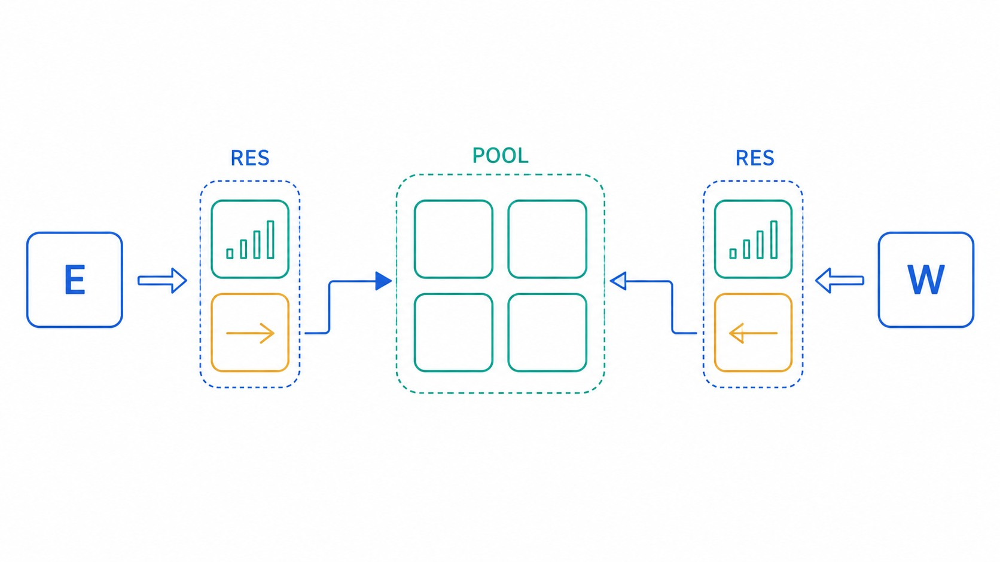
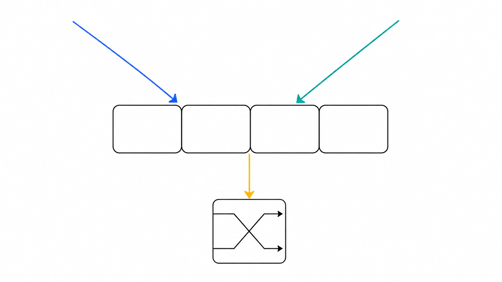

Turn stranded per-direction capacity into a physical shared Pool—without changing total storage.

One direction pair; the router contains three identical pairs.
With link latency L=8, the credit loop is long enough that a hot input can run out of usable VCs even while its opposite input owns idle storage.
Private buffers lock the split at 4/4. A paired Pool can expose a safe 3/1 ownership split without adding a single data slot.

write 0 · E write 1 · W single shared readInput links are credit-controlled but an arriving flit cannot be sent back. Two write paths preserve lossless simultaneous arrival; one read port is shared by an E/W request arbiter.
Two private input banks may drain independently. The Pool exposes only one shared read, so E and W contend when both have ready pooled flits.
The hot side can occupy slots that would be stranded behind the opposite input's private wall. Under one-sided demand, the shared read is not a bottleneck.
2W1R is an implementation assumption, not a free resource. SRAM/register-file area, write-port energy, central wiring and read arbitration must be measured separately from gem5.
Each free Pool slot has exactly one upstream owner. Holding its credit means that side may place one adaptive packet into the shared storage.
On a Pool release, grant the credit to a side with no usable free Pool credit. If both sides are equally eligible, use round-robin.
One private adaptive VC and one escape VC remain outside the Pool. Escape capacity never migrates, so safety does not depend on the grant policy.
| Policy | Information | Expected role |
|---|---|---|
| RTS | last sender only | static/purity anchor |
| RR | none | traffic-oblivious control |
| STARVE | free-credit demand | move credit toward blocked side |
If West is idle, its Pool slots do not release—and therefore generate no event that could move ownership to hot East. The need for migration rises exactly when release traffic disappears.
The owner returns voluntarily; the router never revokes a credit that may already be promised to an in-flight flit.
credits_held > flits_queued, sustained for a threshold. A starving sender owns no spare credit, so it cannot mistakenly return capacity merely because it is silent.
| Credits held | Return delay | Reason |
|---|---|---|
| 2 or more | short | clear surplus; release quickly |
| last one | long | insurance for the next packet/burst |
This directly tests the intuition: do not park many Pool credits locally, but keep the final one long enough to exploit temporal locality.
g_E + g_W = P: no Pool credit is created or lost.| Artifact | Status |
|---|---|
| Architecture/design document | defined |
| M1 helper refactor script | prepared |
| M2 pair-global VC layout script | prepared |
| Dynamic STARVE ownership | not yet validated |
| 2W1R Pool arbitration | not yet validated |
| Voluntary return channel | not yet validated |
The slides therefore separate proposed behavior from measured results. The later 1R1W branch is intentionally excluded from this deck.
No capped configuration beat the same-hardware plain router in saturation throughput or matched-load latency.
| Representative cell | Δ throughput |
|---|---|
| v=4 · x-opposite · tight cap | −22.0% |
| v=3 · x-opposite · cap 2 | −32.7% |
| never-binding cap anchors | bit-identical tie |
A counter cannot move a physical landing limit. Tightening permission without sharing real slots is only throttling.
| Arm | RES / Pool | Purpose |
|---|---|---|
| PRIV | 4 private / side | primary baseline |
| RTS-a / RR-a / STV-a | r=2, P=4 | robust layout |
| RTS-b / RR-b / STV-b | r=1, P=6 | aggressive layout |
Saturation throughput, matched-load latency, per-direction fairness, credit migrations/returns, Pool read utilization, and simultaneous-write activity.
Land dynamic owner state, 2W write acceptance, 1R arbitration, and the voluntary return flag on the current clean design branch.
Run purity anchors and directed simultaneous E/W arrival tests before trusting performance data.
Execute the 1,400-run matrix, then add burst length and owner-return threshold sensitivity.